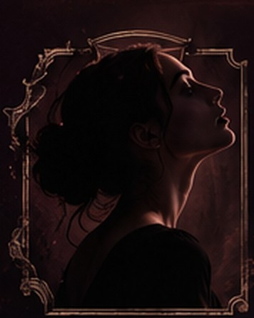
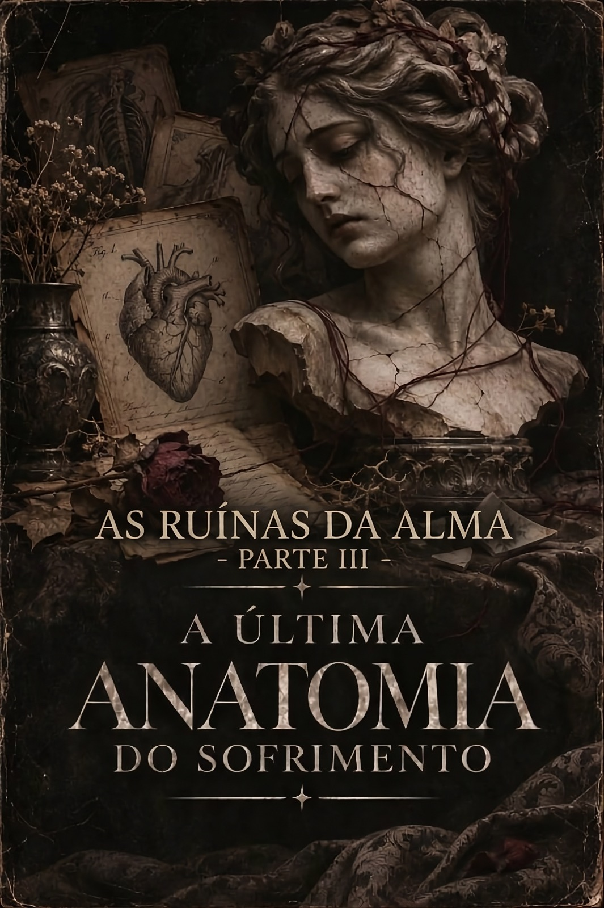

Histórias que mergulham na mente, no coração e nos lugares mais sombrios da alma.

Sobre a Autora
Larissa Galvão é autora de obras que exploram a complexidade dos sentimentos humanos — do amor à obsessão, da poesia à sombra. Em suas histórias, emoção, suspense e questões psicológicas se entrelaçam a universos que vão do real ao medieval, do romântico ao aterrorizante.
Elvira perdeu quase tudo: o casamento, a proximidade da filha e Hélio, o grande amor de sua vida, que está entre a vida e a morte. Ao encontrar cartas guardadas por três décadas, ela é lançada a pesadelos que a levam de volta a outras épocas, a amores e feridas antigas. Entre memória e mistério, uma história comovente sobre culpa, perdão e segundas chances — e sobre um amor que talvez nem o tempo consiga separar.
Aprisionado há séculos no Santuário dos Vampiros, Elliot foge para o mundo humano e encontra Coraline, uma princesa presa às obrigações da coroa. Entre vampiros, bruxas, sereias, dragões e uma guerra entre dois mundos, nasce um amor proibido que desafia o destino e a própria eternidade. Uma fantasia romântica sombria sobre liberdade, pertencimento e o preço de amar quem deveria ser seu inimigo.
As Ruínas da Alma — Parte I: O Inventário de Tudo o que Dói
O começo da travessia: um catálogo íntimo das dores que moram no peito. A tristeza ao amanhecer, a mãe que nunca enxergou a filha e o amor que fere e cura se transformam em versos — até a descoberta de que, mesmo no fundo do abismo, tudo é arte.
PoesiaInfânciaDorAmor18+
Recomendar
As Ruínas da Alma — Parte II: O Museu das Coisas que Morreram
Uma viagem pelas galerias da memória: o toque que nunca foi embora, a infância que partiu sem se despedir, a avó que segurou a mão da neta e os amores que viraram retratos congelados no tempo. Poemas sobre o luto daquilo que existiu e do que nunca chegou a existir.
PoesiaMemóriaLutoSaudade18+
Recomendar

As Ruínas da Alma — Parte III: A Última Anatomia do Sofrimento
O mergulho final — e o mais corajoso. A dor é dissecada até o osso em poemas de imagens brutais e catárticas que enfrentam o trauma, o abuso e a culpa de frente. Um encerramento devastador e libertador, que termina como toda grande travessia: com um adeus.
PoesiaTraumaAbusoCatarse18+
Recomendar
Temas que você encontra nas minhas histórias
Sentimentos e Emoção
Poesia
Suspense
Terror
Medieval
Questões Psicológicas
Romance
Gostou de algum livro?
Ajude a divulgar o meu trabalho! Recomende suas leituras favoritas para seus amigos: